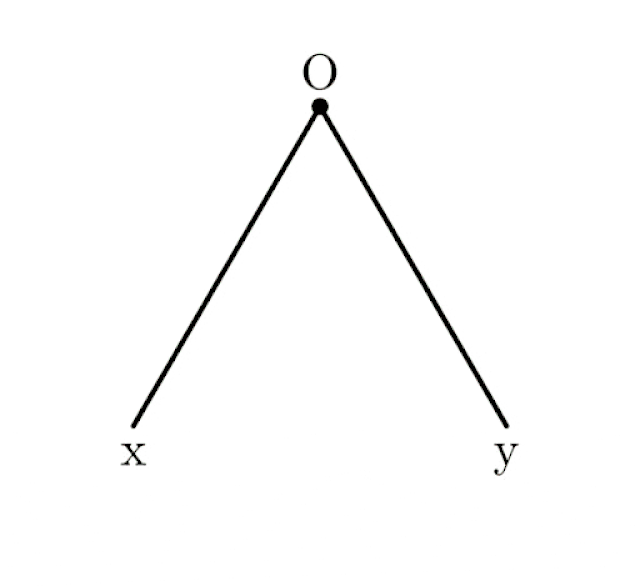
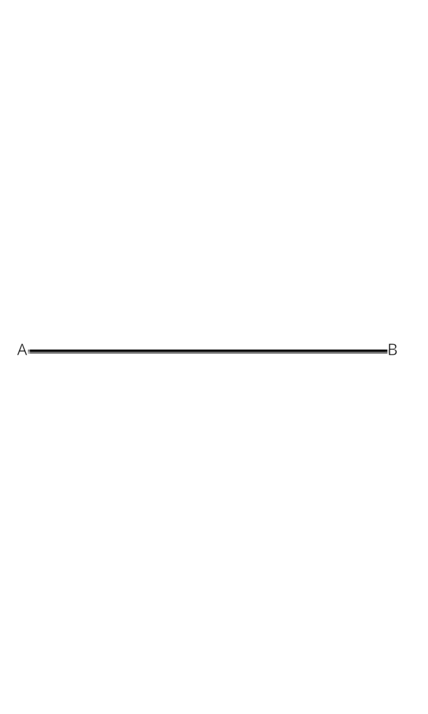
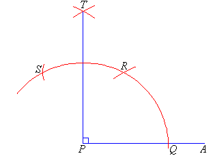
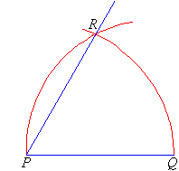

Construção da Bissetriz de um Ângulo
1. Desenhe o ângulo: trace um ângulo qualquer e nomeie seus pontos: O (vértice do ângulo), 𝑥 e 𝑦 (extremidades dos lados do ângulo).
2. Marque dois pontos no ângulo: com a ponta seca do compasso em 𝑂, trace um arco que intersecta os dois lados do ângulo. Marque os pontos de interseção como T1 (no lado 𝑂𝑥) e T2 (no lado 𝑂𝑦).
3. Trace arcos a partir de T1 e T2: posicione a ponta seca do compasso em T1 e trace um arco dentro do ângulo. Sem alterar a abertura do compasso, repita o processo com a ponta em T2, de modo que os dois arcos se cruzem em um ponto T.
4. Desenhe a bissetriz: use a régua para unir o ponto 𝑂 (vértice do ângulo) ao ponto T (interseção dos arcos). A linha 𝑂T será a bissetriz do ângulo.

Fonte da imagem (adaptada)
Construção da Mediatriz de um Segmento
1. Desenhe o segmento de reta: trace um segmento de reta qualquer e nomeie seus extremos como 𝐴 e 𝐵.
2. Marque dois arcos acima e abaixo do segmento: coloque a ponta seca do compasso em 𝐴 e ajuste a abertura para um pouco mais da metade do segmento. Trace um arco acima e outro abaixo. Repita o processo a partir de 𝐵, criando dois novos arcos que cruzam os anteriores.
3. A reta que passa pelos pontos de interseção é a mediatriz.

Construção do Ângulo de 90º
1. Desenhe o segmento PA.
2. Coloque a ponta seca do compasso em P e desenhe um arco que corte o segmento em Q.
3. Coloque a ponta seca do compasso em Q e desenhe um arco de raio PQ que corte o arco anterior em R.
4. Com a ponta do compasso em R, desenhe outro arco para cortar o anterior em S.
5. Continue o processo até identificar o ponto T e una T a P. O ângulo APT é 90º.

Construção do Ângulo de 60º
1. Desenhe o segmento PQ.
2. Com a mesma abertura, trace um arco com centro em P passando por Q.
3. Com centro em Q, trace um arco cortando o anterior. Una P ao ponto de interseção: o ângulo QPR é de 60º.

Construção do Ângulo de 45º
1. Construa um ângulo de 90º.
2. Divida esse ângulo ao meio com a bissetriz: o ângulo resultante é de 45º.